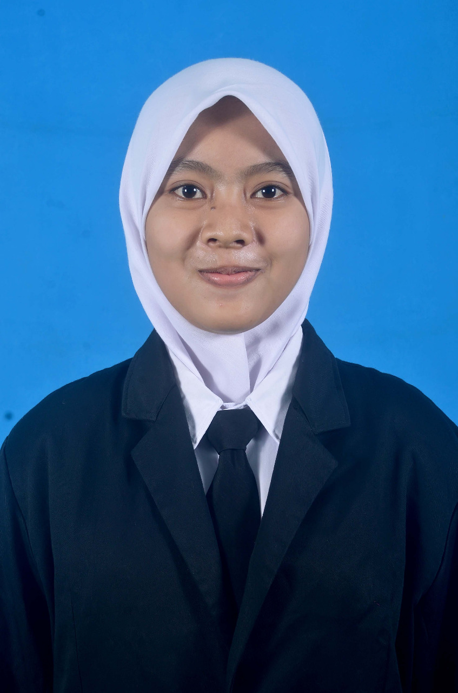

Ragam Kesenian Indonesia

Indonesia merupakan negara yang memiliki beragam kesenian. Kesenian merupakan sebuah sarana yang digunakan oleh seseorang untuk mengekspresikan rasa yang ada dalam jiwanya. Kesenian juga dapat mempererat ikatan solidaritas antar masyarakat. Kesenian juga menjadi ciri khas suatu daerah atau masyarakat. Ada banyak kesenian di Indonesia mulai dari Seni Tari, Seni Teater, Seni Lukis, dan masih banyak lagi. Kesenian Indonesia sudah banyak dikenal oleh negara-negara lain, seperti Tari Saman dari Aceh, Batik Pekalongan khas dari Pekalongan, kesenian Reog dari Jawa Timur, dan masih banyak lagi kesenian yang ada di Indonesia. Indonesia juga memiliki tokoh seni yang karya seninya sudah tidak diragukan lagi, seperti Affandi Koesoema, Basuki Abdullah, Naufal Abshar, Sinta Tantra, dan Bayu Santoso.

Motif Batik Tujuh Rupa – Pekalongan
Klik Gambar Untuk Menampilkan Deskripsi
Pada umumnya, batik Pekalongan menampilkan bentuk motif yang bergambar hewan atau tumbuhan.
Motif-motif tersebut diambil dari berbagai kebudayaan lokal dan etnis Cina. Hal ini dikarenakan pada zaman dulu Pekalongan merupakan tempat transit para pedagang dari berbagai negara.
Sehingga akulturasi budaya inilah yang menyebabkan batik Pekalongan sangat khas dengan alam.
Sembunyikan deskripsi

Motif Batik Priyangan – Tasik
Klik Gambar Untuk Menampilkan Deskripsi
Motif batik Priyangan ini memiliki motif tumbuhan, dimana tumbuhan tersebut digambar dan tersusun rapi dan simetris.
Sehingga terkesan elegan dari segi kerapian maupun corak warnanya.
Batik ini memiliki warna terang namun tetap kalem dan tidak mencolok.
Sembunyikan deskripsi

Motif Batik Sogan – Solo
Klik Gambar Untuk Menampilkan Deskripsi
Batik ini didominasi dengan warna cokelat muda dan memiliki motif khas seperti bunga dengan aksen titik-titik atau lengkungan garis.
Dulunya batik ini digunakan oleh raja-raja di Jawa khususnya di keraton kesultanan Solo.
Namun saat ini batik ini bisa dipakai oleh siapa saja baik warga keraton atau orang biasa.
Sembunyikan deskripsi

Motif Batik Ceplokan – Yogyakarta
Klik Gambar Untuk Menampilkan Deskripsi
Motif ini merupakan kategori batik hias yang sering dipadukan dengan berbagai motif batik yang lainnya
agar mendapatkan corak motif yang lebih indah.
Motif batik ini berdasarkan bentuk geometri yang diulang-ulang seperti persegi, persegi panjang, bulat telur dan juga bintang.
Sembunyikan deskripsi

Motif Batik Sidoluhur – Yogyakarta
Klik Gambar Untuk Menampilkan Deskripsi
Motif batik ini mempunyai makna keluhuran. Orang Jawa beranggapan bahwa tujuan hidup adalah untuk mencapai keluhuran materi dan non materi.
Motif ini juga mempunyai makna bahwa orang tidak hidup untuk dirinya sendiri,
namun dia juga hidup untuk keluarga, lingkungan, masyarakat dan tuhan yang menciptakannya.
Sembunyikan deskripsi

Motif Batik Keraton – Yogyakarta
Klik Gambar Untuk Menampilkan Deskripsi
Batik keraton ini melambangkan kearifan, kebjikasanaan dan juga kharisma raja-raja Jawa.
Zaman dulu, batik ini hanya boleh digunakan warga keraton saja, namun saat ini siapa saja boleh menggunakannya. Batik keraton ini memiliki ciri-ciri yaitu motif bunga yang simetris atau saya burung yang dikenal sebagai motif sawat lar.
Batik ini bisa dibilang paling banyak dipakai baik itu oleh orang Indonesia atau orang luar negeri.
Sembunyikan deskripsi

Barong (1982)
Klik Gambar Untuk Menampilkan Deskripsi
Lukisan ini terlihat unik dan beda dengan karya Affandi yang lainnya.
Ini terlihat dari goresan warna yang begitu tinggi, kombinasi warna dan ukuran lukisan dibuat lebih besar oleh Affandi.
Lukisan ini dibuat karena kecintaanya terhadap budaya Indonesia yaitu tokoh Barong dalam cerita rakyat Bali.
Pencapaian yang sempurna dengan karya seni tinggi membuat lukisan ini tak ternilai harganya bagi para kolektor lukisan.
Sembunyikan deskripsi

Borobudur Pagi Ini (1983)
Klik Gambar Untuk Menampilkan Deskripsi
Salah satu karya Affandi ini terinspirasi oleh kemegahan Candi Borobudur dengan obyek matahari yang sangat indah di pagi hari.
Warna-warna yang tenang mendominasi lukisan ini yang mencermnkan suasana pagi hari.
Pada lukisan ini beliau lebih menonjolkan obyek alam sebagai latar belakangnya.
Sembunyikan deskripsi

Para Pejuang (1972)
Klik Gambar Untuk Menampilkan Deskripsi
Di lukisan ini menceritakan para pejuang Indonesia untuk memperjuangkan kemerdekaan.
Para pejuang rela mengorbankan jiwa dan raga demi tanah air. Lukisan ini mempunyai keunikan goresan dengan warna- warna berani,
ini membuat lukisan karya maestro Affandi bernilai seni tinggi .
Bagi yang mengoleksi lukisan ini akan menjadi kebanggaan tersendiri dengan karya yang hebat ini.
Sembunyikan deskripsi

Cangklong (1975)
Klik Gambar Untuk Menampilkan Deskripsi
Lukisan Affandi selanjutnya paling fenomenal adalah yang berjudul Cangklong.
Pada lukisan ini Affandi melukis dirinya sendiri di depan cermin yang menggambarkan beliau mengalami suatu masalah yang belum terpecahkan. Terlihat di bagian dahinya diekspresikan dengan warna cat merah, yang menggambarkan jika Affandi sendang berpikir keras untuk menyelesaikan masalah.
Lukisan ini adalah karya potret diri dari sang maestro yang pertama kalinya dan merupakan lukisan yang langka.
Sembunyikan deskripsi

Penangkapan Pangeran Diponegoro (1857)
Klik Gambar Untuk Menampilkan Deskripsi
Lukisan ini dikerjakan Raden Saleh di Belanda dan diserahkan pada Ratu Belanda.
Lukisan ini mengecam sikap penjajahan di Jawa dan menuntut agar Belanda mengembalikan martabat orang Jawa.
Karena itu, Raden Saleh juga menggambar dirinya dalam lukisan, sebagai seorang saksi penangkapan yang penuh kecurangan tersebut.
Sembunyikan deskripsi

Kawan-kawan Revolusi (1947)
Klik Gambar Untuk Menampilkan Deskripsi
Menurut istri pertama Sudjojono, Mia Bustam, lukisan ini dilatari oleh sikap heroiknya seorang pejuang
bernama Bung Dullah (bukan pelukis Dullah). Bung Dullah dikisahkan berhasil mengebom empat tank serdadu Belanda
dengan sejumlah bom yang diikatkan di pinggangnya.
Bung Dullah lalu diselipkan dalam lukisan ini di antara 19 wajah yang lain.
Sembunyikan deskripsi

Patung : "Pasangan"
Wijoso Yudosepitro - 1974
Klik Gambar Untuk Menampilkan Deskripsi
Patung “Pasangan” memperlihatkan upaya Wiyoso untuk memanifestasikan gagasan universal yang membentuk dan menandai kehidupan. Femininmaskulin, yin-yang. Penghadiran bentuk dilakukan dengan pendekatan abstrak figuratif terhadap 2 sosok tubuh yang disatukan. Gagasan penyatuan ini bisa mencakup tatanan biologis, kosmik maupun spiritual. Karya ini memperlihatkan karakter organik dan soliditas yang kuat yang dibentuk oleh komposisi 2 sosok yang berdekapan secara asimetris namun seimbang. Ditambah oleh ekspresi kekuatan dan kekerasan kayu besi sebagai media berkaryanya. Karakter yang kemudian muncul adalah citra keabadian dari penyatuan entitas yang saling berlawanan, namun senantiasa berupaya mencapai ekuilibrium ini. Karya “pasangan” ini sebagaimana halnya beberapa karya Wiyoso lain merupakan hasil perenungannya yang intens akan nilai kehidupan yang paling azali dan hakiki. Entitas yang tersirat di dalam karya “Pasangan” tampaknya dipengaruhi juga oleh pola pandang ketimuran yang sarat memuati bidang keilmuan sejarah seni rupa tradisi yang ditekuni Wiyoso selama berkarir sebagai dosen. Sosok “Pasangan” terlihat berasosiasi dengan gagasan menhir atau lingga-yoni.
Sembunyikan deskripsi

Patung : "Kehidupan l,ll,lll, dan lV"
Marida Nastion - 1997
Klik Gambar Untuk Menampilkan Deskripsi
Karya seni grafis kontemporer ini menggambarkan kehidupan masyarakat pendatang (urban) di Jakarta, serta perenungan tentang makna keberadaan manusia-manusia itu di Jakarta. Teknik cetak saring (serigrafi) pada akrilik (plexiglass) sebanyak 30 buah, dan terdiri atas 4 bagian. Bagian pertama, 10 barisan akrilik gambar cetak saring "Tukang Jual Koran" dengan warna biru muda. Bagian kedua, 8 barisan akrilik gambar cetak saring "Wanita Penjual Jamu" dengan warna merah bronze. Bagian ketiga, 7 barisan akrilik gambar cetak saring "Tukang Asongan Minuman" dengan warna hijau muda. Bagian keempat, 5 barisan akrilik gambar cetak saring "Pengemis dengan Anak" berwarna kuning muda.
Sembunyikan deskripsi

Patung : "Anungga Rungga (Lingga Yoni)"
Agoes Jolly - 1992
Klik Gambar Untuk Menampilkan Deskripsi
Karya instalasi “Anungga-Rungga (Lingga Yoni)” (1992) ini merupakan suatu rangkaian bentukbentuk yang terdiri dari abstraksi lingga yoni yang tergantung, dan diapit di kanan kiri oleh dua bentuk gunungan. Pada bagian bawah, terdapat suatu konstruksi kerangka besi dalam bentuk ruang persegi yang tegak dari lantai. Dasar lantai tempat berdiri konstruksi, terdiri dari bubuk marmer putih yang diatur dalam bentuk empat persegi empat dan tepinya berupa batu kerikil.
Karya instalasi ini memadukan dua bentuk karakter, yaitu abstraksi yang dibangun dari citra pementasan wayang dan disandingkan dengan konstruksi infrastruktur modern. Karya ini secara simbolik mengungkapkan bersatunya lingga dan yoni dalam suatu pentas kehidupan, dan momen itu disangga atau berada dalam kokohnya konstruksi bangunan modern. Simbol itu mengungkapkan nilai paradoks, yaitu konstradiksi dan kebenaran dalam penyatuan nilai-nilai budaya tradisi dan modern. Penyatuan cinta dalam kehidupan bisa tidak terbatas pada sekat-sekat nilai budaya.
Sembunyikan deskripsi

Patung : "Solidaritas"
Dolorosa Sinaga - 2000
Klik Gambar Untuk Menampilkan Deskripsi
Dalam karya patung ini, sekelompok perempuan yang duduk berjajar saling menggamit tangan menjadi satu keutuhan dalam kebersamaan. Seorang perempuan, di ujung sisi paling kiri, mengepalkan tangannya ke atas dengan penuh semangat. Di antara barisan tersebut, ada pula sosok perempuan yang mengandung, seolah menunjukan fitrah wanita sebagai ibu. Sosok-sosok yang terekspresikan secara abstrak ini menjadi ungkapan ekspresionis yang kuat.
Dolorosa Sinaga dikenal dengan karya-karyanya yang menggambarkan kekuatan perempuan, baik sebagai pribadi yang terbebani kehidupan maupun kelompok yang memperjuangkan pembebasan. Latar belakang sosiokultural Indonesia masa kini yang banyak diwarnai pelanggaran hak azasi manusia, menjadikan seniman ini terpanggil untuk mengungkapkannya. Lewat karya-karyanya, ia hendak menyadarkan bahwa perempuan dalam kerapuhannya sebenarnya selalu menyimpan energi yang tak kunjung padam, yang lekat dengan kelahiran dan pemelihara kehidupan.
Sembunyikan deskripsi

Patung : "Born And Freedom"
Heri Dono - 2004
Klik Gambar Untuk Menampilkan Deskripsi
Karya “Born and Freedom” (2004) merupakan instalasi yang merupakan jajaran lima pasang figur manusia burung di dinding, yang digandengkan dengan rantai pada binatang-binatang di lantai di depannya. Pada manusia burung di dadanya tertanam mesin dan warna tubuhnya memancarkan ekspresi kusam arkhaik. Pada binatang-binatang dengan akspresi yang sama, di kaki belakangnya tepasang roda-roda. Figur-figur hibrid ini lahir sebagai makhluk mitologis yang menggabungkan dunia masa lalu dengan teknologi masa kini, sekaligus menantang kebebasan dunia masa kini.
Heri Dono dikenal sebagai perupa kontemporer Indonesia yang dalam karya-karyanya banyak menggabungkan idiom-idiom tradisi seperti wayang dan benda-benda arkhaik dengan bentuk-bentuk dan problem masa kini. Pada penggabungan yang aneh dan muskil pada objekobjeknya, sering muncul berbagai makna yang satiris dan paradoksal.
Sembunyikan deskripsi

Patung : "Komposisi Makhluk Mitologi"
I Nyoman Tjokot - 1965
Klik Gambar Untuk Menampilkan Deskripsi
Karya patung I Nyoman Tjokot yang berjudul “Komposisi Mahluk Mitologi” (1965) ini, merupakan konfigurasi imajinatif tentang makhluk-makhluk dari dunia mistis. Bentuk-bentuknya cenderung mengarah pada idiom visualyang bersifat demonis dengan ekspresi yang menakutkan. Sosok-sosok totemdalam tekstur kasar, saling bertumpuk dengan bentuk dan gerak tubuh yang bebas. Ronggarongga selain memberi batas bentuk juga menjadi aksentuasi suasana primitif. Dalam karya-karyanya Nyoman Tjokot cenderung tidak mengukir dengan rumit, apalagi menghaluskan figur-figurnya. Ia justru merespon lekuk-lekuk bentuk kayu yang ada, dan menggali munculnya berbagai figur dengan kemungkinan bentuk dan gesturnya. Ronggarongga selain memberi batas bentuk juga menjadi aksentuasi suasana primitif. Dalam karya-karyanya Nyoman Tjokot cenderung tidak mengukir dengan rumit, apalagi menghaluskan figur-figurnya. Ia justru merespon lekuk-lekuk bentuk kayu yang ada, dan menggali munculnya berbagai figur dengan kemungkinan bentuk dan gesturnya.
Sembunyikan deskripsi
Developer This Web
Fajar Fatha Romadhan
NIM : 200411100047
Email: fajarfathar@gmail.com
Fiqry Wahyu Diki W
NIM : 200411100125
Email: fiqrydiky01@gmail.com
Ari Andi Mustofa
NIM : 200411100133
Email: andyary961@gmail.com

Nanda Putri Febri Antono
NIM : 200411100036
Email: putrifebriantono@gmail.com
Uswatun Chasanah
NIM : 200411100100
Email: uswatun41100pesonaxxi@gmail.com